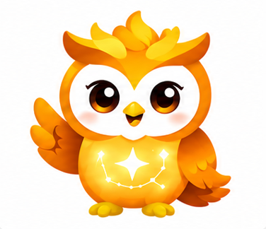

NikoLearn v2.00 · prototype
↻ თავიდან
Niko
Learn

გამარჯობა! მე ნიკო ვარ
რა ვისწავლოთ დღეს?
🔢
რიცხვები
🔤
ასოები
🌍
ენა
დრო გვაქვს. აქ არ ვჩქარობთ.
ყოჩაღ, წავედით! ✨
🔊
სად არის სამი ვაშლი?
დააჭირე როცა მზად ხარ
🍎
🍎🍎🍎🍎
🍎🍎🍎
🍎🍎
🌱 ჯერ არა, კიდევ დააკვირდი
⭐
✨
✨
შენ შეძელი! 🎉
პირველი ფიქრის ვარსკვლავი
კიდევ ვცადოთ
დავისვენოთ